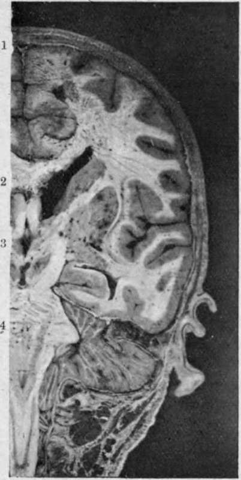

Temporal Region. Continued
Description
This section is from the book "Surgical Anatomy", by John A. C. MacEwen. Also available from Amazon: Surgical Anatomy.
Temporal Region. Continued
The Wormian bones, or ossa triquitra, occur chiefly about the lambdoidal suture. Generally few in number and symmetrical, they may form a regular chain, and in cases of hydrocephalus are present in large numbers, and attain a large size. The os epactal at the apex of the occipital has already been referred to. They are occasionally met with about the lachrymal bones and outer extremity of the sphenomaxillary fissure, and one frequently occurs about the anteroinferior angle of the parietal, in the region of the pterion, which is called the epipteric bone, is scale-like, and may suggest a separation of the tip of the great wing of the sphenoid.
Fractures of the vault of the skull are generally due to direct violence. Where the blow is struck on the frontal region, the force is transmitted to the parietals upon which the posterior part of the frontal rests, and these deal with it as follows. When the parietal region is injured, the force tends to drive the upper borders of the bone inwards, and therefore the lower borders outwards. This latter movement is resisted by the overlapping of the great wing of the sphenoid and squamous bone. From the latter it is transmitted by the zygoma to the superior maxilla and frontal bone, and patients frequently complain of pain in the face after receiving such injuries. The occiput is not similarly provided with means of dissipating the force of blows applied to it, and is generally more readily fractured.
The base of the skull, developed from cartilage, is of much more varying thickness than the vault. The bones do not interdigitate as those of the vault do, and they are pierced by numerous foramina.
The anterior fossa lies at a considerably higher level than the other fossae. The bone constituting its base is extremely thin, and, forming as it does the roof of the orbital and nasal cavities, is easily fractured by instruments thrust into them. Such fractures are dangerous-not so much from probable damage to the anterior lobes of the brain, as from the great liability to entrance of organisms to the meninges and brain. Sometimes in nasal injuries affecting the ethmoid the anterior end of the longitudinal sinus may be torn, torrents of blood escaping with a hissing noise through the dilated nostrils. Where the nasal mucous membrane is torn in fracture of the anterior fossa, bleeding from the nose occurs, and if mucous membrane, bone, and dura are all ruptured, cerebro-spinal fluid may escape. Where the orbital plate of the frontal is broken, subconjunctival ecchymosis generally appears a few days after the accident, travelling from behind forwards, and in severe cases proptosis may occur. The anterior fossa lodges the frontal lobes of the cerebrum.
The. middle fossa is situated at a considerably lower level than the anterior, and, viewed from above, is like a triangular box, the base of which, directed toward the surface, is covered by the squamous of the temporal and a small portion of the sphenoid, while the apex is formed by the sella turcica, the anterior wall by the great wing of the sphenoid, and the posterior wall by the petrous of the temporal.
The middle fossa contains the temporo-sphenoidal lobe of the brain, and its enclosing form is of importance as thereby the pressure caused by temporo-sphenoidal abscess is directed upwards to the motor cortex, and especially the face centre. Lodged at the apex of the triangle, in a depression on the anterior surface of the petrous and enclosed in a fold of dura mater, lies the Gasserian ganglion.
Almost immediately under the ganglion lies the internal carotid artery, passing down to the foramen lacerum medium, while under it again lies the cartilaginous extremity of the Eustachian tube. This relationship may be a cause of the inflammatory conditions sometimes found affecting the dural sheath of the Gasserian ganglion, and giving rise to a terrible form of trigeminal neuralgia, which can only be relieved by removal of the ganglion. The ganglion sends off the three branches of the fifth nerve ; the first, or ophthalmic, passing along with the third, fourth, and sixth nerves, and the ophthalmic vein through the sphenoidal fissure ; the second, or superior maxillary, through the foramen rotundum ; and the third, or inferior maxillary, along with the small meningeal artery, through the foramen ovale. The ganglion is most easily and safely reached by making an osteoplastic flap of cheek and anterior wall of antrum of Highmore, following the inferior orbital nerve back through the spheno-maxillary fossa to the foramen rotundum, laying the foramen rotundum and the foramen ovale into one by means of a bur, and then incising the bulging dural pouch in which the ganglion lies, and twisting out the ganglion by means of the two great trunks. Thus the subdural space is not opened into, nor the brain exposed (Macewen). In the posterior or petrous wall of the middle fossa lie the middle ear, mastoid antrum, etc., and, as the wall of bone separating these structures from the middle fossa is very thin, disease spreads readily from them to the meninges and the ternporo-sphenoidal lobe.
Entering the fossa at the foramen spinosum, a little external to the foramen ovale is the middle meningeal artery, which runs first outwards and then, divided into anterior and posterior branches, upwards over the external wall of the fossa, which is grooved, and sometimes tunnelled, to receive it. Owing to its intimate relations with the bone, this artery is not infrequently torn in cases of fracture of these parts, causing extensive extradural haemorrhage, and compression of the brain.
The crests of the ridges forming the triangular fossa are occupied by sinuses. These intracranial sinuses are formed by a splitting of the dura mater, and have a triangular section, with rounded base. Anteriorly, running along the sphenoidal crest is the small and unimportant sphenoparietal sinus ; internally the apex is occupied by the large and very important cavernous sinus which, with the internal carotid artery, lies in a groove on the body of the sphenoid. The two cavernous sinuses are intimately connected by means of the circular sinus. Posteriorly, connecting the cavernous with the knee of the lateral sinus is the superior petrosal sinus. running along the petrous crest. It is not a large sinus, and is not so important as the inferior petrosal.
The posterior fossa, viewed bilaterally, is roughly triangular in shape, with a rounded base. It is covered in by the arched tentorium, save at the apex, where there is an oval opening in the tentorium for the passage of the mesencephalon. The occipital lobes rest upon the upper surface of the tentorium, while within the fossa the cerebellum, medulla, and portions of all the cranial nerves, except the first three, are contained. The posterior fossa may thus be compared to a shut box, the tentorium forming the lid, and it can be readily understood why pressure, as from abscess, occurring in this fossa has a rapid and general effect upon the cerebellum.
The cerebellum is not, as is generally stated, entirely confined to the posterior fossa. On the contrary, its lower extremity enfolding the medulla frequently passes down through the foramen magnum, to terminate opposite the atlas, or even the axis (see plate). The tentorium splits at its bony insertions to form posteriorly the large lateral sinuses, and anteriorly the superior petrosal sinuses. Emerging antero-laterally from the posterior surface of the petrous are the seventh and eighth nerves, and it is by the sheaths of these nerves that pyogenic mischief is frequently carried from the middle and internal ear to the meninges, causing generalized meningitis. Running from the posterior end of the cavernous sinus down to the jugular bulb is the inferior petrosal sinus.
While fracture of the base of the skull may be due to either direct or -indirect violence, it most frequently occurs by extension from the vault. The fracture may involve the anterior, middle, or posterior fossa, and the symptoms differ according to the fossa involved.
In fracture of the anterior fossa there is generally bleeding from the nose, as already described ; proptosis of the eyeball from accumulation of blood behind it, with the subjective sensation of flashes of light from irritation of the optic nerve ; effusion of blood into the conjunctiva, and later into the eyelids, coming on some time after the injury. The speech centre may be affected in left-sided lesions, and occasionally the face centre is involved.
In fracture of the middle fossa there is generally bleeding from the ear, the membrana having been ruptured; but occasionally the blood may pass down the Eustachian tube and be swallowed, and, if subsequently vomited, may lead one to suspect internal injuries. Where the dura is ruptured, escape of cerebro - spinal fluid by the ear is frequently met with, the fluid in some cases finding its way into the middle ear through a fracture of the tympanic attic, and in others coming along the sheaths of the seventh and eighth nerves where the internal ear is involved. While a hernia cerebri might possibly protrude through the ear, it certainly is of very rare occurrence. Facial paralysis from involvement of the facial nerve is common, and deafness from involvement of the eighth nerve is less so. Pharyngeal ecchymosis frequently appears within a few days of the accident.
Fig. 3. -Coronal head Section passing through portion of the Spinal Canal.
Note opposite 1 the superior longitudinal sinus and the falx cerebri extending vertically downwards from it. At 2, the corpus callosum, and beyond it the lateral ventricle (dilated) with the optic thalamus projecting into its outer side. Opposite 3, the third ventricle, and beyond it the internal capsule (white), lenticular nucleus, external capsule (white), clau-strum, and then the surface of the island of Reil enveloped by the parietal and temporo-sphenoidal lobes. Opposite 4, the pons and portion of the middle cerebellar peduncle, and below it the medulla, cord, and upper spinal nerves. Beyond the pons, the cerebellum roofed in by tentorium. Note how the cerebellum projects down through the foramen magnum, enveloping the medulla.
In fracture of the posterior fossa the movements of the tongue and of swallowing are generally impaired, owing to involvement of the ninth nerve about the jugular foramen, or the twelfth about the anterior condyloid foramen, while ecchymosis over the mastoid and posterior triangle of the neck appears some days after the injury, the same region being tender to pressure.
Continue to: